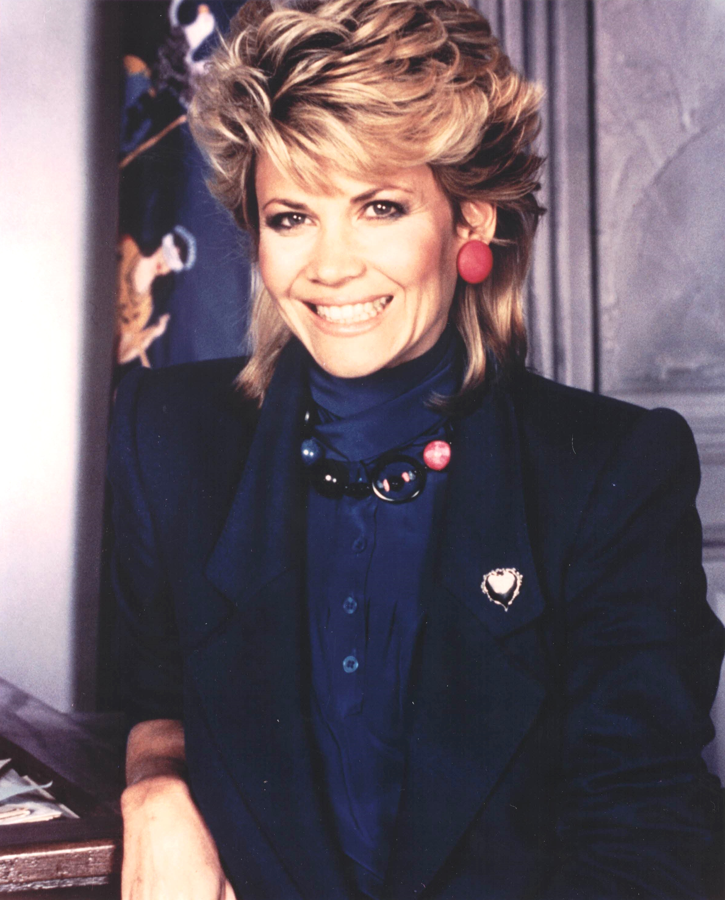

Product No. HEC-0090
$9.99
Shipping: $8.95
Description
8x10 color photograph
Full Description
Markie Post (Deceased) was an American actress best known for her roles in popular television comedies of the 1980s and 1990s. Born Marjorie Armstrong Post on November 4, 1950, in Palo Alto, California, she worked behind the scenes on television game shows before becoming a successful actress. Post gained early recognition as bail bondswoman Terri Michaels on "The Fall Guy," starring Lee Majors. She later became especially famous for playing public defender Christine Sullivan on the hit sitcom "Night Court." Joining the series in 1985, Post starred alongside Harry Anderson, John Larroquette, and Richard Moll. Her warm, intelligent, and often idealistic character became one of the show's central figures. She later starred opposite John Ritter in the sitcom "Hearts Afire," playing political reporter Georgie Anne Lahti. Post also appeared in many television movies and guest roles on programs including "Cheers," "The Love Boat," "Fantasy Island," "Scrubs," and "Chicago P.D." Her film work included a memorable appearance in "There's Something About Mary" as the mother of Cameron Diaz's character. Markie Post died on August 7, 2021, at age 70. Her performances in "Night Court," "The Fall Guy," and "Hearts Afire" made her a familiar and well-liked television personality, and her autographs, photographs, and memorabilia remain popular with collectors of classic television and 1980s entertainment.
Condition
Excellent condition